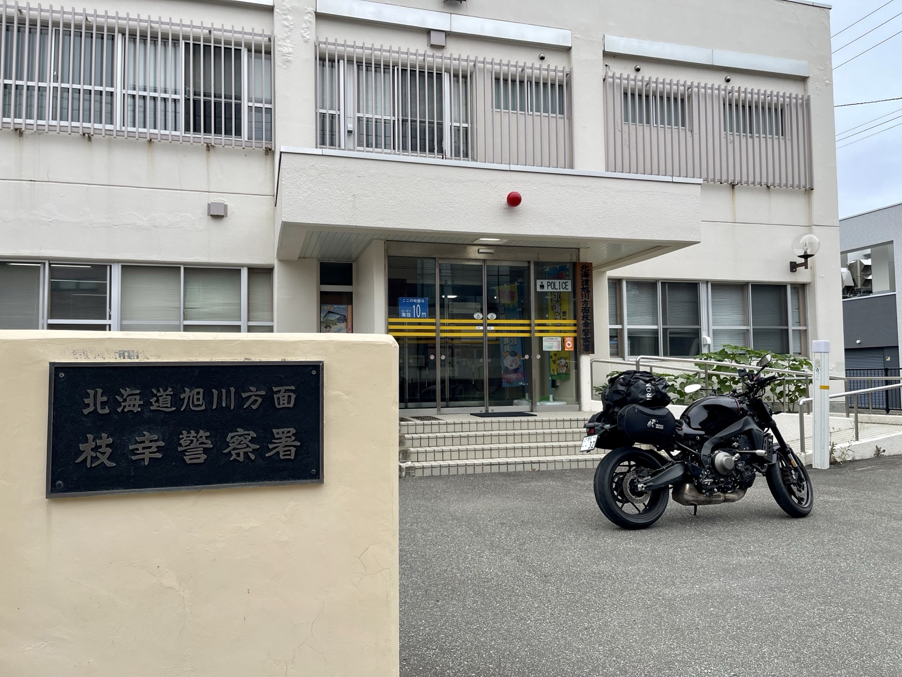
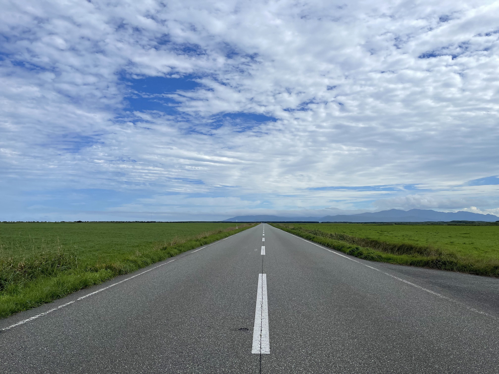
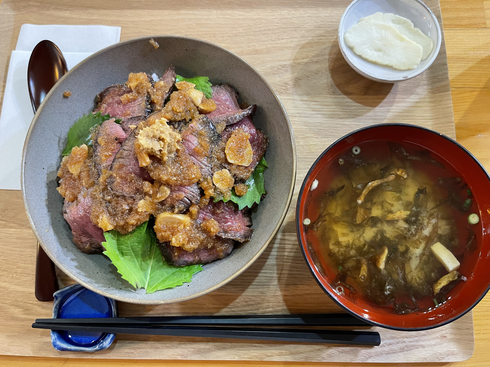

紋別を出発し、オホーツク海沿いを北上する。今日の目的地は稚内。道北の果てまで一気に走る日だ。
オホーツク海沿いの国道は、海と牧草地が交互に現れる気持ちのいいルートだ。右手に海を見ながら走り続けると、北海道を走っているという実感が改めて湧いてくる。
枝幸町で財布を落とす
道の駅「マリーンアイランド岡島」（枝幸町）で休憩を終えて出発してすぐ、何かが足りない感覚がした。サイドケースを確認すると、財布がない。
ファスナーが開いていた。走行中に財布が飛び出したらしい。
すぐに引き返して道を探したが、見つからない。来た道を30分以上かけて走り直しても、財布の影も形もない。途中で「もう終わった」と思った。現金はともかく、カード類の再発行、保険証……頭の中で最悪のシナリオが回り始めた。

AirTagからの通知
諦めかけたそのとき、スマホに通知が来た。AirTagから「財布が移動した」という通知だ。
財布の中にAirTagを入れていた。位置情報を見ると——枝幸警察署。
急いで向かった。警察署の窓口で「財布を届けていただいたと思うのですが」と伝えると、すぐに出てきた。地元の方が拾って届けてくれていた。中身は全部そのままだった。

財布を受け取ったとき、正直泣きそうになった。見知らぬ旅人の財布をわざわざ警察まで届けてくれた人がいる。北海道の人のやさしさに触れた瞬間だった。
北海道サイコー！枝幸町サイコー！AirTagは財布に入れておくべし。
気を取り直して稚内へ。今日の教訓——サイドケースのファスナーは必ず確認すること。

稚内の夜
稚内市内に着き、晩ごはんはお肉のどんぶりにした。

今日のルート
1
道の駅マリーンアイランド岡島
北海道枝幸郡枝幸町目梨泊332-1 / オホーツク海を望む道の駅。
2
枝幸警察署
北海道枝幸郡枝幸町栄町56 / 地元の方が届けてくれた財布がここに。感謝しかない。